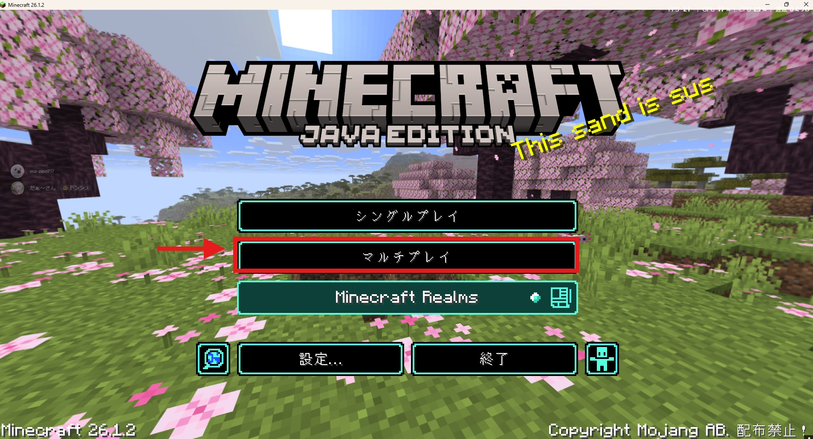
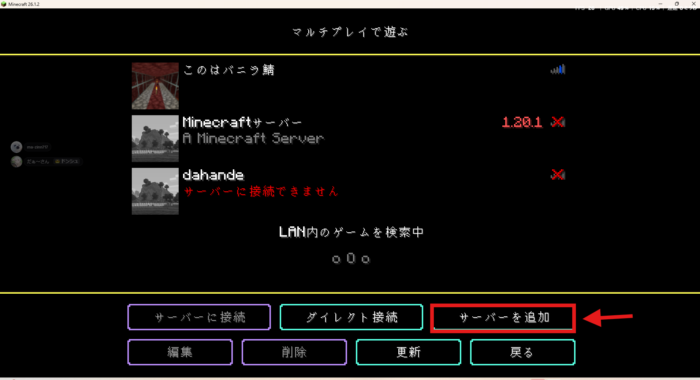
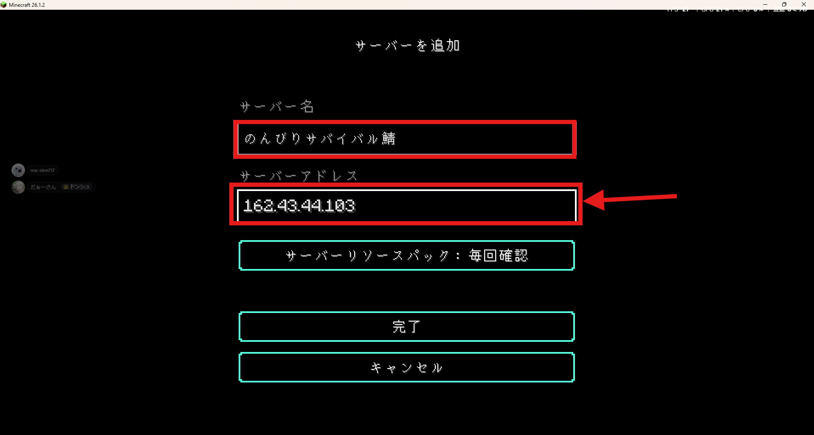

⛏️ Minecraft サーバー接続手順
🔌 サーバー接続情報
IP: 162.43.44.103
ポート: 25565
(デフォルト・省略可)
PW: なし
MOD: なし (バニラ運用)
📡 リアルタイムステータス
サーバー情報を取得中…
🖥️ サーバー設定
バージョン
26.1.2
エディション
Java Edition
ゲームモード
サバイバル
難易度
ノーマル
MOD
なし (バニラ運用)
ホワイトリスト
必須 (事前申請制)
サーバー再起動
毎日 6:00 / 18:00
💡 再起動時間 (6:00 / 18:00) の前後数分は接続が切れます。建築・採掘の途中の場合はキリの良いところで待機してください。
⚠️ ホワイトリスト制サーバーです。
参加には事前にホワイトリスト申請が必要です。下記の Step 1 の手順で Discord に Minecraft ID を投稿してください。
参加には事前にホワイトリスト申請が必要です。下記の Step 1 の手順で Discord に Minecraft ID を投稿してください。
ホワイトリスト申請をする
Discord の専用チャンネルにあなたの Minecraft ID を投稿してください。管理者が承認するとサーバーに参加できるようになります。
💬 ホワイトリスト申請チャンネル
💡 投稿フォーマット例:
Minecraft ID: YourName123
Minecraft を起動して「マルチプレイ」を開く
Minecraft 公式ランチャーから Java Edition (バージョン 26.1.2) を起動し、タイトル画面の マルチプレイ をクリックします。
※ Bedrock Edition (統合版) は本サーバーに接続できません。Java Edition が必要です。

「サーバーを追加」を選ぶ
マルチプレイ画面の右下にある サーバーを追加 ボタンをクリックします。

サーバー情報を入力
以下の情報を入力して 完了 をクリックします。
入力項目
サーバー名: のんびりサバイバル鯖 (任意)
サーバーアドレス: 162.43.44.103

サーバー一覧に追加されるので、ダブルクリックで参加できます。
うまく接続できないときは